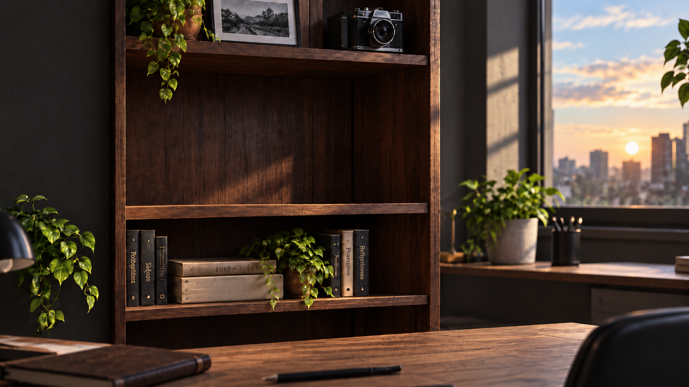
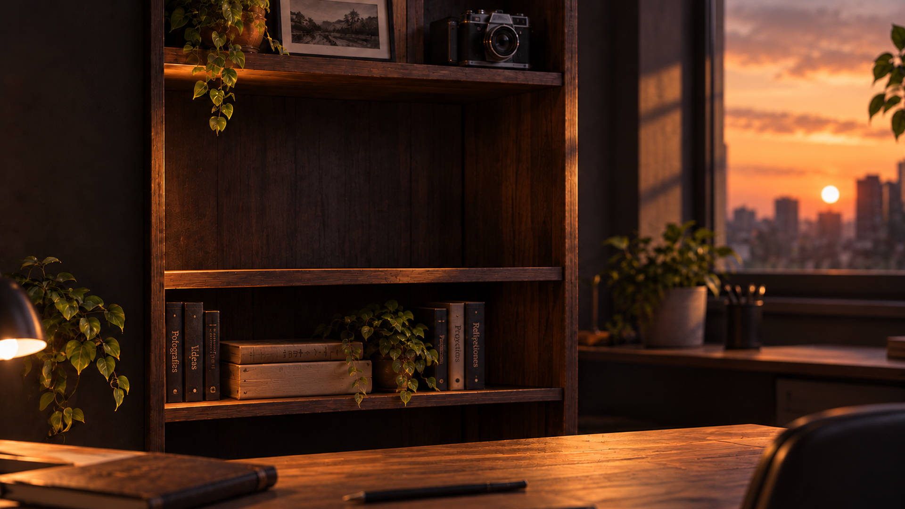
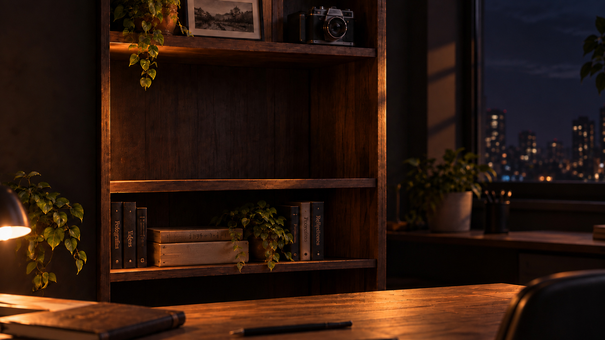
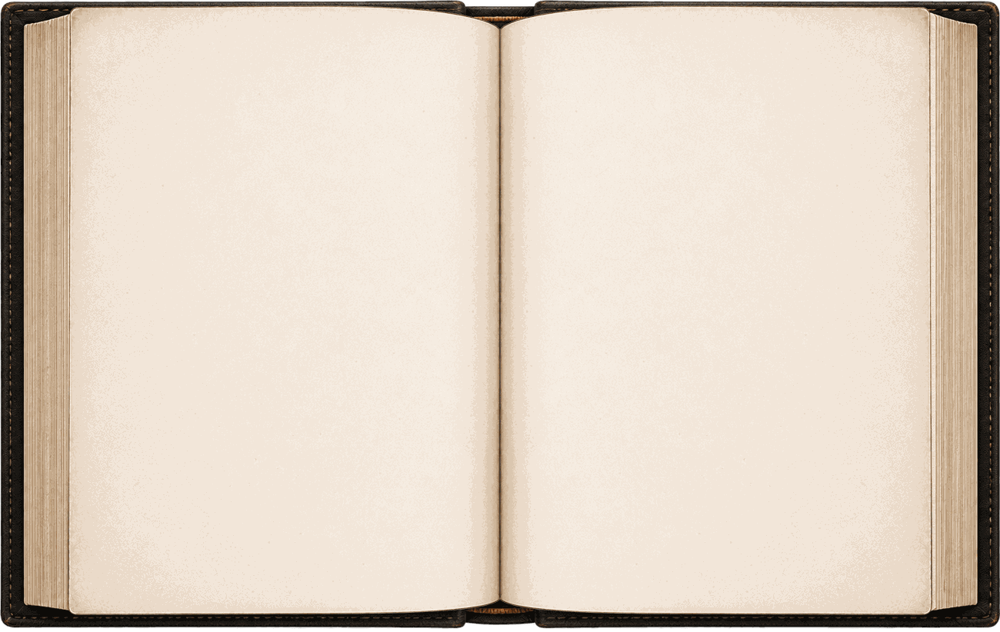
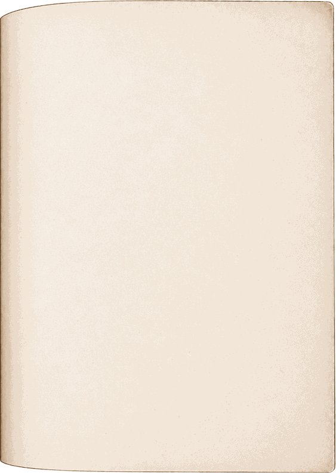
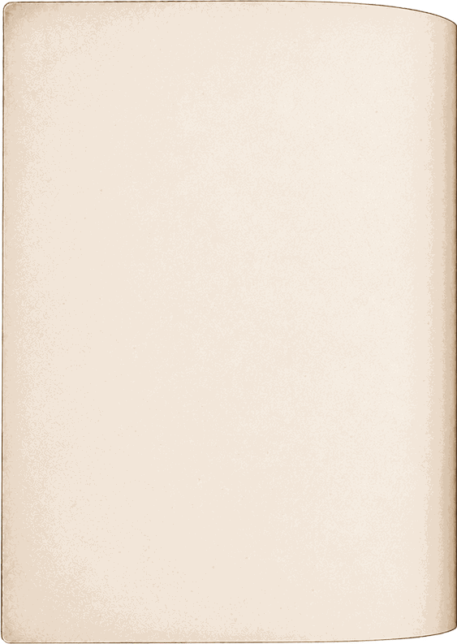

Gira el teléfono para leer
Escribo para no olvidar. Porque algún día mis personas importantes conocerán lo que a veces hay que pasar para seguir creciendo.
La vida nunca deja de enseñarnos, solo hay que estar dispuesto a aprender.
Diego P.


